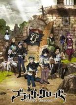

Anime Dialy
Rekomendasi Anime Keren
Tentang Saya

Black Clover bercerita tentang 2 anak yatim piatu bernama Asta dan Yuno. Mereka dibesarkan bersama di gereja yang sama dan sejak itu tak terpisahkan. Sebagai anak-anak, mereka berjanji akan saling bersaing untuk melihat siapa yang akan menjadi Kaisar Magus berikutnya. Namun, saat mereka tumbuh dewasa, beberapa perbedaan di antara keduanya menjadi jelas. Yuno adalah seorang penyihir jenius dengan kekuatan dan kontrol yang luar biasa, sementara Asta sama sekali tidak bisa menggunakan sihir, dan mencoba menutupi kekurangannya dengan berlatih secara fisik.
Ketika mereka menerima Grimoires (buku sihir) mereka pada usia 15, Yuno mendapat sebuah buku spektakuler dengan semanggi empat daun (kebanyakan orang menerima semanggi tiga daun), sementara Asta tidak menerima apapun sama sekali. Namun, saat Yuno terancam, Asta mengeluarkan kekuatan yang sebenarnya, dia menerima Grimoires dengan semanggi lima daun yang berwarna “hitam!”. Sekarang kedua teman itu menuju ke luar di dunia, keduanya mencari tujuan yang sama!
Sumber : Kaori Nusantara